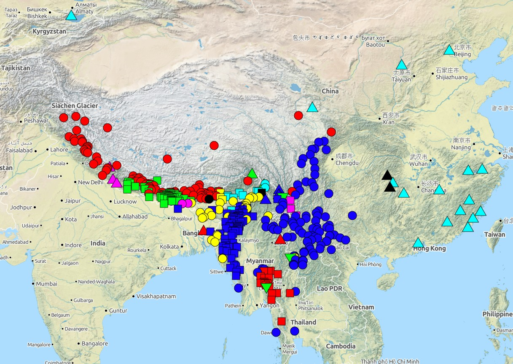

Helping collect the world's language diversity heritage.
This diversity is exemplified by the Sino-Tibetan language family on the map below (from Glottolog).

The Cross-Linguistic Linked Data project is developing and curating interoperable data publication structures using Linked Data principles as integration mechanism for distributed resources.
This philosophy allows for
Within the project, this approach will be applied to publishing lexical and grammatical databases already compiled at the MPI-EVA and elsewhere. This has led to a software framework which can then be used to develop database journals, i.e. edited collections of databases submitted by linguists from around the world.
A list of databases implemented as clld applications and published on the CLLD platform is available following the Datasets link.
The following journals will soon be started for linguistic databases:
For the purposes of linking linguistic data uniquely to languages, language codes are needed for each language and each variety. For this reason, the CLLD project also comprises: